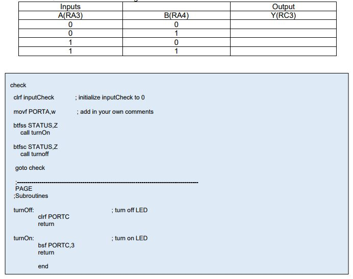
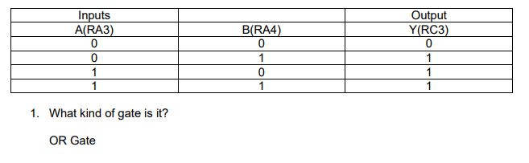

Software Tutorials
TUTORIAL #10: Gate Simulation
TEJ4M0
Previous Tutorial
Objective:
Using MPLAB SIM to discover which logic gate the program is written to emulate without building the circuit.
Procedure:
1. Create new project with same name:
a. Create a new project/workspace/source file, all saved in new folder called asmGate
2. Add source code to the Editor window (see bottom of page):
a. Make any necessary modifications or additions to the code in the Editor window
b. To simulate a logic gate, we need 2 inputs and one output. Setup your SFRs so that you are using RA3 (A) and RA4 (B) as the two inputs, and RC3 as the output (Y)
a. No breakpoints are required since you don't use the Dlay instruction.
b. Build it (Cntrl + F10) successfully.
3. Open MPLAB SIM
a. Add Watch window (CMCON0, STATUS, ANSEL, TRISA, TRISC, PORTA, PORTC)
c. Add RA3 and RA4 (push button inputs) and comments for each to new Stimulus workbook. Save it in the asmGate folder you already created.
4. Test inputs (RA3 and RA4):
a. Since you have two inputs, this must mean you have four scenarios to test (see TT below)
b. Use the Fire (>) button to simulate these four scenarios and fill in the truth table.
c. Conclusion: what kind of gate is it???

Tutorial 10 answers:
